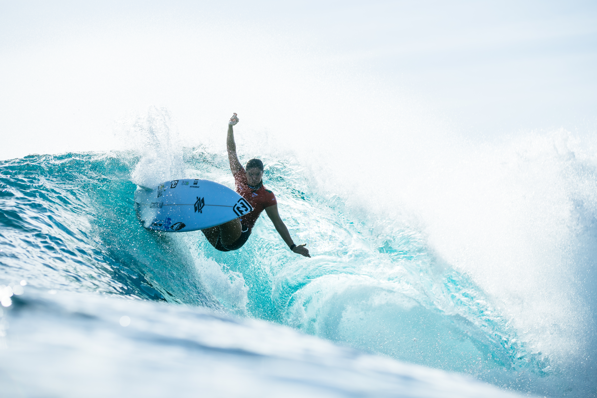

O segundo dia da etapa das Filipinas do Circuito Mundial de Surfe de 2026, realizado em 1º de novembro, foi marcado por uma combinação de grandes ondas, resultados inesperados e mudanças importantes no cenário da corrida pelo título mundial. Em Cloud 9, na ilha de Siargao, a WSL conseguiu avançar significativamente na programação, com a conclusão da primeira rodada masculina, a definição das quartas de final femininas e as duas primeiras baterias das oitavas de final dos homens.
Depois de uma abertura marcada pelas dificuldades provocadas pelo vento e pela programação reduzida, conforme detalhado na cobertura do primeiro dia, a competição ganhou ritmo em Cloud 9. A segunda jornada trouxe condições mais favoráveis, permitiu a realização de 16 baterias.
Para o Brasil, o saldo foi misto. Filipe Toledo conseguiu uma vitória de virada, Luana Silva garantiu presença entre as oito melhores da etapa, mas Italo Ferreira, Miguel Pupo, João Chianca e Samuel Pupo acabaram eliminados.
O grande destaque internacional ficou com os surfistas filipinos John Mark Tokong e Jayuard Alciso, que aproveitaram o conhecimento das ondas locais para superar adversários de destaque no cenário mundial.
Italo Ferreira sofre derrota importante na corrida pelo título
O brasileiro chegou às Filipinas ocupando a vice-liderança do ranking mundial, atrás de Yago Dora, e encontrou o havaiano Seth Moniz em sua estreia na competição.
A bateria foi equilibrada, com os dois atletas buscando tubos nas direitas de Cloud 9. Italo conseguiu uma onda de 7,50 pontos, mas não encontrou uma segunda nota suficiente para superar o adversário.
Seth Moniz venceu por 14,43 a 13,67 e conquistou uma vaga nas quartas de final, encerrando prematuramente a participação do brasileiro no Philippines Pro.
Veja os melhores momentos da bateria abaixo:
Miguel Pupo é eliminado por Jack Robinson
Logo depois da derrota de Italo, outro brasileiro envolvido na parte superior do ranking deixou a competição.
Miguel Pupo enfrentou o australiano Jack Robinson na segunda bateria das oitavas de final e acabou derrotado por 13,23 a 12,60.
A diferença apertada no somatório demonstrou o equilíbrio do confronto, mas Robinson conseguiu assegurar as duas notas necessárias para avançar.
Veja os melhores momentos da bateria abaixo:
Com isso, as duas primeiras vagas masculinas nas quartas de final ficaram com Seth Moniz e Jack Robinson, que passaram a formar o primeiro confronto da fase seguinte.
Filipe Toledo consegue virada na sua bateria
Entre os brasileiros que participaram da primeira rodada masculina, Filipinho foi o único que conquistou a classificação.
O bicampeão mundial enfrentou o norte-americano Cole Houshmand e precisou de uma reação na parte final da bateria. Atrás no placar durante boa parte da disputa, Toledo encontrou uma onda decisiva nos instantes finais e conseguiu virar o confronto.
O resultado foi uma vitória por 10,67 a 9,53, garantindo sua presença nas oitavas de final.
A classificação colocou o brasileiro diante de um adversário especialmente importante: Griffin Colapinto, terceiro colocado do ranking na chegada às Filipinas e vencedor da etapa anterior, disputada em Portugal.
Veja os melhores momentos da bateria abaixo:
João Chianca e Samuel Pupo deixam a competição
Chumbinho, protagonizou uma das disputas mais equilibradas da fase diante do australiano Liam O'Brien.
O brasileiro somou 13,33 pontos, mas foi superado pelos 14,33 de O'Brien, encerrando sua participação no evento por uma diferença de apenas um ponto.
Veja os melhores momentos da bateria abaixo:
Já Samuel Pupo enfrentou uma situação ainda mais complicada. Seu adversário foi John Mark Tokong, surfista filipino que conhece profundamente Cloud 9 e recebeu uma das vagas de convidado para competir na etapa.
Tokong dominou a bateria, recebeu notas 8,60 e 8,00 e terminou com 16,60 pontos, contra 11,00 do brasileiro.
O resultado representou o maior somatório da primeira rodada masculina e transformou o representante da casa em um dos protagonistas da competição.
Veja os melhores momentos da bateria abaixo:
As grandes surpresas
O segundo dia do Philippines Pro também teve um significado histórico para o surfe filipino.
John Mark Tokong, conhecido como Marama, mostrou por que possui uma trajetória tão forte em Cloud 9. Com quatro títulos em competições do Qualifying Series realizadas no pico, o atleta aproveitou sua experiência para encontrar tubos profundos e superar Samuel Pupo.
A festa local ganhou ainda mais força com Jayuard Alciso.
O filipino enfrentou Kauli Vaast, francês campeão olímpico nos Jogos de Paris 2024, e conseguiu uma vitória apertada por 12,93 a 12,17.
Alciso construiu seu somatório com ondas de 7,33 e 5,60 pontos, suficientes para eliminar um dos nomes mais conhecidos do surfe internacional.
As duas vitórias reforçaram uma particularidade da etapa filipina: mesmo atletas com grande experiência no Circuito Mundial podem enfrentar dificuldades contra surfistas que conhecem profundamente o comportamento de Cloud 9.
Luana Silva vence havaiana e avança às quartas de final
No feminino, o Brasil também teve um motivo importante para comemorar.
Luana enfrentou a havaiana Bettylou Sakura Johnson e conquistou a classificação para as quartas de final com uma vitória por 10,63 a 9,66.
A brasileira precisou administrar uma disputa equilibrada. Depois de ver Bettylou assumir a liderança, Luana encontrou duas ondas que mudaram o confronto, recebendo notas 5,23 e 5,40.
Com o somatório de 10,63, passou à frente da adversária e conseguiu defender a vantagem até o encerramento da bateria.
O resultado colocou Luana entre as oito melhores competidoras do Philippines Pro e definiu um confronto de grande dificuldade na sequência: a brasileira passou a ter pela frente Carissa Moore, pentacampeã mundial.
Veja os melhores momentos da bateria abaixo:
Carissa Moore, Molly Picklum e outras favoritas avançam
A conclusão da primeira rodada feminina também reuniu atuações importantes de algumas das principais surfistas do circuito.
Carissa Moore superou a australiana Sierra Kerr por 14,33 a 6,07. A havaiana conseguiu uma onda de 9,00 pontos, uma das melhores performances individuais da etapa até aquele momento.
Molly Picklum, líder do ranking feminino na chegada ao evento, também confirmou sua classificação. A australiana venceu a filipina Mara Lopez por 11,50 a 4,50.
Outra disputa equilibrada aconteceu entre Isabella Nichols e Lakey Peterson. Nichols venceu por apenas 0,20 ponto: 9,67 a 9,47.
Tyler Wright eliminou Erin Brooks por 11,93 a 10,64, enquanto Nadia Erostarbe superou Sawyer Lindblad por 10,04 a 9,57.
Com esses resultados, o Philippines Pro encerrou a primeira rodada feminina e definiu todos os confrontos das quartas de final.
Como ficaram os confrontos
No masculino, as seis baterias restantes das oitavas de final ficaram definidas da seguinte maneira:
- Griffin Colapinto (EUA) x Filipe Toledo (BRA)
- Ethan Ewing (AUS) x John Mark Tokong (FIL)
- Yago Dora (BRA) x Connor O'Leary (JAP)
- Kanoa Igarashi (JAP) x Jayuard Alciso (FIL)
- Gabriel Medina (BRA) x Liam O'Brien (AUS)
- Leonardo Fioravanti (ITA) x George Pittar (AUS)
No feminino, os confrontos das quartas de final ficaram assim:
- Caitlin Simmers (EUA) x Yolanda Hopkins (POR)
- Luana Silva (BRA) x Carissa Moore (HAV)
- Molly Picklum (AUS) x Isabella Nichols (AUS)
- Tyler Wright (AUS) x Nadia Erostarbe (ESP)
Próxima chamada da competição: data, horário e transmissão
O terceiro dia do evento está marcado para este domingo, 1º de novembro, às 20h (horário de Brasília), equivalente às 7h de segunda-feira, 2 de novembro, nas Filipinas. A previsão é de que as baterias sejam retomadas às 21h de Brasília, dependendo das condições do mar em Cloud 9.
A programação prevê a realização das seis baterias restantes das oitavas de final masculinas. A competição poderá ser acompanhada ao vivo pelos canais oficiais da WSL. Como acontece nas etapas do Circuito Mundial, a entrada dos atletas na água depende da avaliação das condições das ondas e do vento pela organização.
O segundo dia da WSL Filipinas
As baterias tiveram impacto em diferentes frentes da temporada de 2026.
Na disputa masculina, a eliminação de Italo Ferreira, então vice-líder mundial, abriu uma oportunidade para outros candidatos ao título. A saída de Miguel Pupo também reduziu o grupo de brasileiros que ainda poderiam conquistar um resultado expressivo na etapa.
Ao mesmo tempo, Filipe Toledo manteve sua campanha viva e Gabriel Medina e Yago Dora permaneceram na competição, preservando a presença brasileira nos confrontos decisivos.
No feminino, Luana Silva conseguiu uma classificação importante, enquanto Molly Picklum e Carissa Moore avançaram, mantendo o confronto entre duas das principais integrantes da corrida pelo título.
Mas talvez o elemento mais marcante do dia tenha sido o protagonismo filipino. As vitórias de John Mark Tokong e Jayuard Alciso mostraram que o conhecimento de um pico pode ser determinante, mesmo em uma competição que reúne os melhores surfistas do mundo.
A estreia de Cloud 9 no calendário da elite da WSL ganhou, assim, um capítulo importante. O segundo dia não apenas acelerou o andamento do Philippines Pro, mas também produziu resultados capazes de influenciar a reta final da temporada mundial.